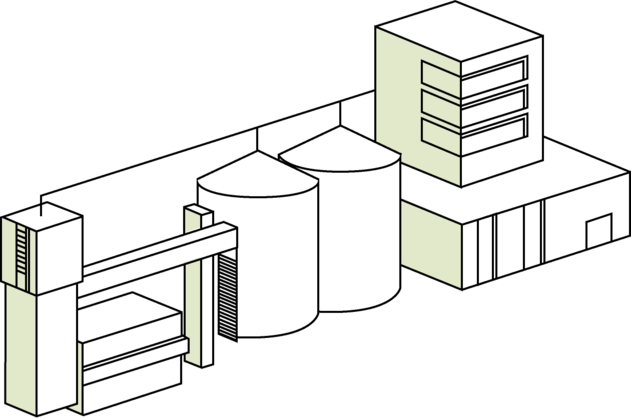

наш маслоэкстракционный завод «Потоки» занимается производством двух основных видов готовой продукции:
наш маслоэкстракционный завод «Потоки» занимается производством двух основных видов готовой продукции:
Благодаря современному оборудованию и новейшим технологиям низкотемпературной экстракции, мы достигли высокого уровня производства. Семена подсолнечника подвергаются максимальному отжиму и масло получается очень насыщенным. А инновационное оборудование позволяет производить уникальный высокопротеиновый шрот, который не имеет аналогов в мире по своему химическому составу.

Благодаря современному оборудованию и новейшим технологиям низкотемпературной экстракции, мы достигли высокого уровня производства. Семена подсолнечника подвергаются максимальному отжиму и масло получается очень насыщенным. А инновационное оборудование позволяет производить уникальный высокопротеиновый шрот, который не имеет аналогов в мире по своему химическому составу.

Закупка лучших масличных культур
Мы производим нашу продукцию из семян масличных культур (подсолнечник, соя) с высокой насыщенностью жира. Всё сырье мы тщательно проверяем в собственной лаборатории входного контроля и берем в работу исключительно лучшие сорта.
Производим подсолнечное масло
Подсолнечное масло нашего производства имеет высокую насыщенность жира. Обладает ярко выраженным ароматом свежего подсолнечного ядра и приятным натуральным вкусом.
В продукте полностью сохранены:
витамин Е
ненасыщенные жирные кислоты, которые называют витамином F

Производим уникальный шрот
Технологии производства нашего завода позволяют произвести уникальный высокопротеиновый шрот. Его состав подобен составу соевого шрота и содержит в себе до 46% протеина. Имеет высокий состав аминокислот, в частности метионина, который благоприятно влияет на рост молодых животных, птиц и рыб.
Состав высокопротеинового уникального шрота:
46% содержание протеина
2% содержание жира
8% содержание влаги
6% клетчатка
Наш завод также производит обычный подсолнечный шрот, который отличается по составу от высокопротеинового. Он включает в себя множество полезных веществ, необходимых для роста свиней, КРС и птиц. В шроте содержится фосфор, витамины В и Е и другие минеральные вещества.
Состав подсолнечного шрота:
1,5-2% содержание масла
39% содержание сырого протеина
ДО 23% содержание клетчатки
9-11% влага
Дополнительная продукция
Подсолнечный фосфатидный концентрат
Широко используется в пищевой промышленности для производства лецитина, применяются в хлебопечении как улучшители качества хлеба. Хорошо усваиваются в организме человека, благоприятно влияют на белково–жировой обмен и служат источником образования органического фосфора.

Пеллеты из лузги подсолнечника
Производятся из перемолотой лузги семян подсолнечника с помощью прессования при высокой температуре и без добавления какого-либо связующего материала. Теплоту сгорания гранул из лузги можно сравнить с теплотворной способностью бурого угля.
Технологии и оборудование
01
Лучшее оборудование
Пропускная способность завода позволяет перерабатывать 1400 тонн семян подсолнечника в сутки.

02
Большой объем производства
Пропускная способность завода позволяет перерабатывать 1400 тонн семян подсолнечника в сутки.

03
Инновации
Все технологические процессы извлечения масла и сопутствующих продуктов направлены на сохранение первоначальных свойств сырья: полноценность, сбалансированность по калорийности и жирнокислотному составу.

04
Контроль качества
Каждая партия готовой продукции, проходит полный контроль по показателям качества, в соответствии с нормативными документами на продукцию.
01 / 04
Наши контакты
- Адрес:Украина, г. Днепр, ул. Байкальская 9
- Телефон:0-800-12-34-56
- Email:info@mez.com.ua